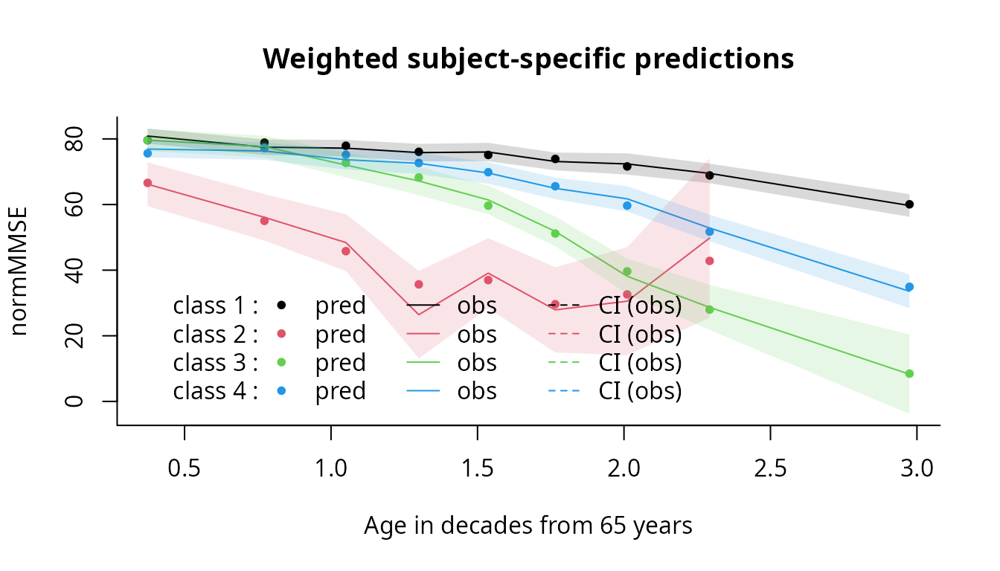
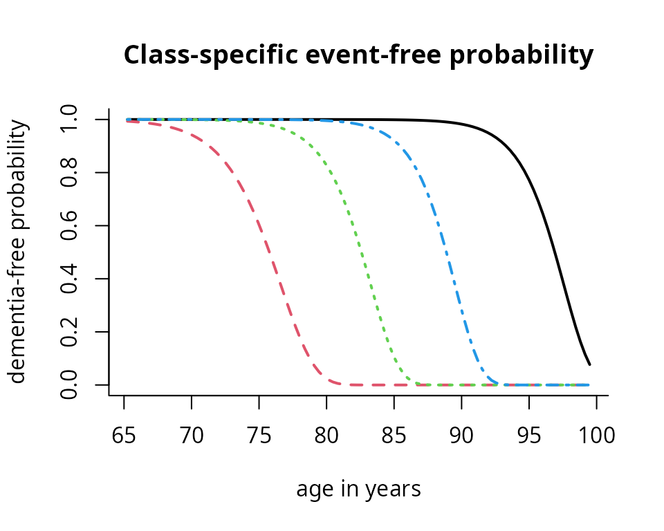
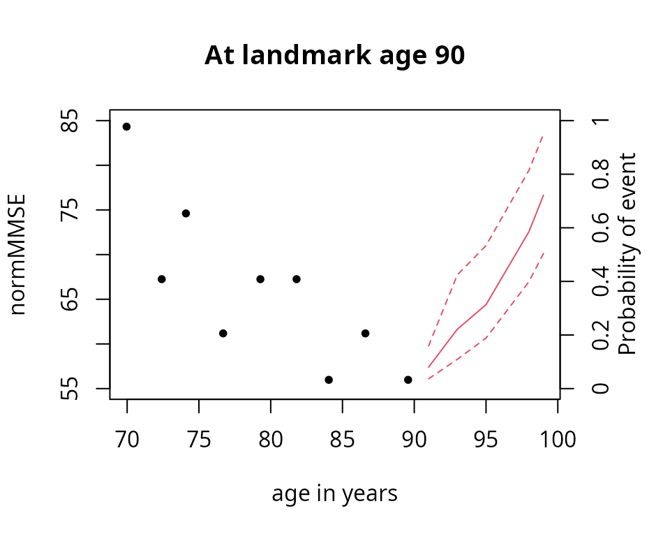

How to estimate a joint latent class mixed model using Jointlcmm function
Source:vignettes/joint_latent_class_model_with_Jointlcmm.Rmd
joint_latent_class_model_with_Jointlcmm.Rmd
Background on the model
Joint models are used to analyse simultaneously two related phenomena, the evolution of a variable and the occurence of an event. Joint latent class models (JLCM) consist of a linear mixed model and a proportional hazard model linked by the latent classes. The population is split in several groups, the latent classes, and each class is caracterized by a specific evolution of the dependent variable and an associated risk of event.
Latent class membership is defined by a discrete random variable that equals if subject belongs to latent class ( = 1, …,). The variable is latent; its probability is described using a multinomial logistic model according to covariates :
where is the intercept for class and is the q1-vector of class-specific parameters associated with the q1-vector of time-independent covariates . For identifiability, and . When no covariate predicts the latent class membership, this model reduces to a class-specific probability.For a continuous and Gaussian variable, the trajectories of are defined conditionally to the latent class by a linear mixed model. So, conditional on class , the model is defined for subject at occasion :
where , and are vectors of covariates respectively associated with common fixed effects over classes , class-specific fixed effects and with individual random effects called whose distributions are now class-specific. and can’t have common variables.
The proporional hazard model is defined conditionaly on the same class as :
where and are vectors of covariates respectively associated with common effects aver classes and class-specific effects .
Data
We use the paquid sample included in the package. Please refer to the introduction vignette for more details about these data. We consider here only the subjects at risk of dementia at the begining of the study :
paquidS <- paquid[which(paquid$agedem > paquid$age_init),]We also create some variables that will be used in the example :
First use of Jointlcmm function
We model jointly the trajectory of normMMSE and time to dementia. As a JLCM is estimated for a fixed number of latent classes, we begin by specifying the model with 1 latent class.
1. Linear mixed model for normMMSE trajectory
We begin by specifying the linear mixed model for normMMSE. We will consider the same specification as in the hlme vignette, that is a quadratic trajectory with age adjusted for CEP.
lmm <- hlme(normMMSE ~ age65 + I(age65^2) + CEP , random =~ age65 + I(age65^2),
subject = 'ID', data = paquidS,verbose=FALSE)
summary(lmm)
#> Heterogenous linear mixed model
#> fitted by maximum likelihood method
#>
#> hlme(fixed = normMMSE ~ age65 + I(age65^2) + CEP, random = ~age65 +
#> I(age65^2), subject = "ID", data = paquidS, verbose = FALSE)
#>
#> Statistical Model:
#> Dataset: paquidS
#> Number of subjects: 499
#> Number of observations: 2213
#> Number of observations deleted: 36
#> Number of latent classes: 1
#> Number of parameters: 11
#>
#> Iteration process:
#> Convergence criteria satisfied
#> Number of iterations: 25
#> Convergence criteria: parameters= 2.1e-07
#> : likelihood= 6.6e-09
#> : second derivatives= 5.8e-16
#>
#> Goodness-of-fit statistics:
#> maximum log-likelihood: -8916.59
#> AIC: 17855.18
#> BIC: 17901.52
#>
#>
#> Maximum Likelihood Estimates:
#>
#> Fixed effects in the longitudinal model:
#>
#> coef Se Wald p-value
#> intercept 64.64416 1.95702 33.032 0.00000
#> age65 5.59810 2.30157 2.432 0.01500
#> I(age65^2) -6.09658 0.79065 -7.711 0.00000
#> CEP 13.65079 1.35072 10.106 0.00000
#>
#>
#> Variance-covariance matrix of the random-effects:
#> intercept age65 I(age65^2)
#> intercept 212.80180
#> age65 -216.41731 456.5118
#> I(age65^2) 55.71579 -145.7874 59.36679
#>
#> coef Se
#> Residual standard error: 10.07244 0.202772. Survival model for dementia diagnosis
Joinlcmm assumes a parametric baseline risk function. We thus need to determine the family of baseline risks. To do so, we will use the jointlcmm function in which the longitudinal part will be the same as in hlme.
In the application, the risk of dementia is described according to age so we have a problem of delayed entry. The program handles it by specifying age_init in the Surv object.
We try different families of baseline risks (Weibull, Splines, piecewise constant) and we systematically adjust on CEP and male.
# Weibull distribution
mj1 <- Jointlcmm(normMMSE ~ age65 + I(age65^2) + CEP, random =~ age65 + I(age65^2),
survival = Surv(age_init, agedem, dem) ~ CEP + male, hazard = "Weibull",
subject = 'ID', data = paquidS, verbose=FALSE)
mj1$best
#> event1 +/-sqrt(Weibull1) event1 +/-sqrt(Weibull2) CEP
#> 0.1038941 3.6270872 -0.2484354
#> male intercept age65
#> -0.2007211 64.6441641 5.5980977
#> I(age65^2) CEP varcov 1
#> -6.0965763 13.6507881 212.8020164
#> varcov 2 varcov 3 varcov 4
#> -216.4176788 456.5123512 55.7159127
#> varcov 5 varcov 6 stderr
#> -145.7875460 59.3668519 10.0724388
# Note that to reduce computation time, we could fix the parameters of the longitudinal
#part to those of the linear mixed model
binit <- c(1,1,1,1,lmm$best)
mj1bis <- Jointlcmm(normMMSE ~ age65 + I(age65^2) + CEP, random =~ age65 + I(age65^2),
survival = Surv(age_init, agedem, dem) ~ CEP + male, hazard = "Weibull",
subject = 'ID', data = paquidS,B=binit, posfix=5:15, verbose=FALSE)
# Piecewise constant hazard
mjP1 <- Jointlcmm(normMMSE ~ age65 + I(age65^2) + CEP, random =~ age65 + I(age65^2),
survival = Surv(age_init, agedem, dem) ~ CEP + male, hazard = "piecewise",
subject = 'ID', data = paquidS, verbose=FALSE)
# Hazard approximated by cubic splines (3 intern knots located at the quantiles by default
mjS1 <- Jointlcmm(normMMSE ~ age65 + I(age65^2) + CEP, random =~ age65 + I(age65^2),
survival = Surv(age_init, agedem, dem) ~ CEP + male, hazard = "splines",
subject = 'ID', data = paquidS, verbose=FALSE)The Weibull model gives the best fit.
# From the summary table, we prefer the Weibull model
summarytable(mj1,mjP1,mjS1)
#> G loglik npm BIC %class1
#> mj1 1 -9449.079 15 18991.35 100
#> mjP1 1 -9452.777 17 19011.17 100
#> mjS1 1 -9447.434 20 19019.12 100
summarytable(mj1,mjP1,mjS1,which=c("npm","loglik","AIC"))
#> npm loglik AIC
#> mj1 15 -9449.079 18928.16
#> mjP1 17 -9452.777 18939.55
#> mjS1 20 -9447.434 18934.87
# Summary of the model
summary(mj1)
#> Joint latent class model for quantitative outcome and competing risks
#> fitted by maximum likelihood method
#>
#> Jointlcmm(fixed = normMMSE ~ age65 + I(age65^2) + CEP, random = ~age65 +
#> I(age65^2), subject = "ID", survival = Surv(age_init, agedem,
#> dem) ~ CEP + male, hazard = "Weibull", data = paquidS, verbose = FALSE)
#>
#> Statistical Model:
#> Dataset: paquidS
#> Number of subjects: 499
#> Number of observations: 2213
#> Number of latent classes: 1
#> Number of parameters: 15
#> Event 1:
#> Number of events: 128
#> Weibull baseline risk function
#>
#> Iteration process:
#> Convergence criteria satisfied
#> Number of iterations: 37
#> Convergence criteria: parameters= 2.6e-06
#> : likelihood= 2.3e-07
#> : second derivatives= 1.2e-12
#>
#> Goodness-of-fit statistics:
#> maximum log-likelihood: -9449.08
#> AIC: 18928.16
#> BIC: 18991.35
#> Score test statistic for CI assumption: 168.544 (p-value=0)
#>
#> Maximum Likelihood Estimates:
#>
#> Parameters in the proportional hazard model:
#>
#> coef Se Wald p-value
#> event1 +/-sqrt(Weibull1) 0.10389 0.00060 174.217 0.00000
#> event1 +/-sqrt(Weibull2) 3.62709 0.17427 20.812 0.00000
#> CEP -0.24844 0.18806 -1.321 0.18650
#> male -0.20072 0.20399 -0.984 0.32513
#>
#> Fixed effects in the longitudinal model:
#>
#> coef Se Wald p-value
#> intercept 64.64416 1.95705 33.031 0.00000
#> age65 5.59810 2.30170 2.432 0.01501
#> I(age65^2) -6.09658 0.79069 -7.710 0.00000
#> CEP 13.65079 1.35071 10.106 0.00000
#>
#>
#> Variance-covariance matrix of the random-effects:
#> intercept age65 I(age65^2)
#> intercept 212.80202
#> age65 -216.41768 456.5124
#> I(age65^2) 55.71591 -145.7876 59.36685
#>
#> coef Se
#> Residual standard error 10.07244 0.20278It is possible to change the parameterization of the survival model (with log instead of +/-sqrt)
binit <- c(1,1,1,1,lmm$best)
mj1ter <- Jointlcmm(normMMSE ~ age65 + I(age65^2) + CEP, random =~ age65 + I(age65^2),
survival = Surv(age_init, agedem, dem) ~ CEP + male, hazard = "Weibull",
subject = 'ID', data = paquidS,B=binit, posfix=5:15,logscale = TRUE, verbose=FALSE)
#> event1 log(Weibull1) event1 log(Weibull2) CEP
#> 1 1 1
#> male
#> 1
#> event1 log(Weibull1) event1 log(Weibull2) CEP
#> 0.2372000 0.9902321 0.9056381
#> male
#> 0.9770275
#> event1 log(Weibull1) event1 log(Weibull2) CEP
#> -0.7251690 0.9888428 0.8884781
#> male
#> 0.9730797
#> event1 log(Weibull1) event1 log(Weibull2) CEP
#> -1.7269514 0.9892144 0.8859636
#> male
#> 0.9725280
#> event1 log(Weibull1) event1 log(Weibull2) CEP
#> -2.7335154 0.9898055 0.8852146
#> male
#> 0.9723791
#> event1 log(Weibull1) event1 log(Weibull2) CEP
#> -3.7396381 0.9903824 0.8842992
#> male
#> 0.9721774
# Same loglikelihood, HR, only the parameters of the baseline risk function change.
summary(mj1ter)
#> Joint latent class model for quantitative outcome and competing risks
#> fitted by maximum likelihood method
#>
#> Jointlcmm(fixed = normMMSE ~ age65 + I(age65^2) + CEP, random = ~age65 +
#> I(age65^2), subject = "ID", survival = Surv(age_init, agedem,
#> dem) ~ CEP + male, hazard = "Weibull", data = paquidS, logscale = TRUE,
#> posfix = 5:15, verbose = FALSE)
#>
#> Statistical Model:
#> Dataset: paquidS
#> Number of subjects: 499
#> Number of observations: 2213
#> Number of latent classes: 1
#> Number of parameters: 15
#> Number of estimated parameters: 4
#> Event 1:
#> Number of events: 128
#> Weibull baseline risk function
#>
#> Iteration process:
#> Convergence criteria satisfied
#> Number of iterations: 90
#> Convergence criteria: parameters= 6.4e-05
#> : likelihood= 4.1e-05
#> : second derivatives= 8e-07
#>
#> Goodness-of-fit statistics:
#> maximum log-likelihood: -9449.08
#> AIC: 18906.16
#> BIC: 18923.01
#> Score test statistic for CI assumption: 168.584 (p-value=0)
#>
#> Maximum Likelihood Estimates:
#>
#> Parameters in the proportional hazard model:
#>
#> coef Se Wald p-value
#> event1 log(Weibull1) -59.41437 3.23418 -18.371 0.00000
#> event1 log(Weibull2) 2.57409 0.05404 47.632 0.00000
#> CEP -0.24874 0.18769 -1.325 0.18508
#> male -0.20153 0.20258 -0.995 0.31982
#>
#> Fixed effects in the longitudinal model:
#>
#> coef Se Wald p-value
#> intercept 64.64416*
#> age65 5.59810*
#> I(age65^2) -6.09658*
#> CEP 13.65079*
#>
#>
#> Variance-covariance matrix of the random-effects:
#> intercept age65 I(age65^2)
#> intercept 212.80180*
#> age65 -216.41731* 456.51177*
#> I(age65^2) 55.71579* -145.78736* 59.36679*
#>
#> coef Se
#> Residual standard error 10.07244*
#>
#> * coefficient fixed by the user
#> 3. Estimation with different numbers of latent classes
Once the specification of the model under G=1 is done (one class means independent models), we can estimate the model with more than one class.
This is a cumbersome step in the analysis since the estimation has to be replicated for different numbers of latent classes AND various initial values to avoid the convergence toward a local maximum.
3.1 Model with two latent classes
# Model with 2 latent classes and class-specific baseline risks
# The starting values are determined by the model under G=1
# CAUTION: Try to specify argument B=. Otherwise, the program internally estimated a
# first model with G=1 which artificially makes the program longer.
mj2 <- Jointlcmm(normMMSE ~ age65 + I(age65^2) + CEP, mixture =~ age65 + I(age65^2),
random =~ age65 + I(age65^2), survival = Surv(age_init, agedem, dem)
~ CEP
+ male, hazard = "Weibull", subject = 'ID', data = paquidS, ng=2,B=mj1, verbose=FALSE)
# model with 2 latent classes and proportional hazards in each class
mj2_prop <- Jointlcmm(normMMSE ~ age65 + I(age65^2) + CEP, mixture =~ age65 + I(age65^2),
random =~ age65 + I(age65^2), survival = Surv(age_init, agedem, dem)
~ CEP + male, hazard = "Weibull", subject = 'ID', data = paquidS,
ng=2,B=mj1, hazardtype='PH', verbose=FALSE)
# comparison
summarytable(mj2,mj2_prop,which=c("npm","loglik","AIC"))
#> npm loglik AIC
#> mj2 21 -9337.187 18716.37
#> mj2_prop 20 -9338.147 18716.29We could choose to consider proportional hazards given the fit obtained but we continue with class-specific baseline risk functions to allow for more flexibility. Note that the results in terms of classification seem to be very close.
# Classification given in
head(mj2$pprob)
#> ID class probYT1 probYT2
#> 1 1 2 0.38861735 0.61138265
#> 2 2 1 0.94870154 0.05129846
#> 3 3 2 0.44381993 0.55618007
#> 4 4 2 0.32373146 0.67626854
#> 5 5 2 0.02164884 0.97835116
#> 6 6 1 0.73146956 0.26853044
# comparison of classifications
xclass(mj2,mj2_prop)
#>
#> 1 2
#> 1 100 5
#> 2 0 394The estimates of the model are in the summary.
# summary of the model
summary(mj2)
#> Joint latent class model for quantitative outcome and competing risks
#> fitted by maximum likelihood method
#>
#> Jointlcmm(fixed = normMMSE ~ age65 + I(age65^2) + CEP, mixture = ~age65 +
#> I(age65^2), random = ~age65 + I(age65^2), subject = "ID",
#> ng = 2, survival = Surv(age_init, agedem, dem) ~ CEP + male,
#> hazard = "Weibull", data = paquidS, verbose = FALSE)
#>
#> Statistical Model:
#> Dataset: paquidS
#> Number of subjects: 499
#> Number of observations: 2213
#> Number of latent classes: 2
#> Number of parameters: 21
#> Event 1:
#> Number of events: 128
#> Class-specific hazards and
#> Weibull baseline risk function
#>
#> Iteration process:
#> Convergence criteria satisfied
#> Number of iterations: 26
#> Convergence criteria: parameters= 2.2e-07
#> : likelihood= 2.7e-09
#> : second derivatives= 5.1e-13
#>
#> Goodness-of-fit statistics:
#> maximum log-likelihood: -9337.19
#> AIC: 18716.37
#> BIC: 18804.84
#> Score test statistic for CI assumption: 66.059 (p-value=0)
#>
#> Maximum Likelihood Estimates:
#>
#> Fixed effects in the class-membership model:
#> (the class of reference is the last class)
#>
#> coef Se Wald p-value
#> intercept class1 -0.61509 0.16464 -3.736 0.00019
#>
#> Parameters in the proportional hazard model:
#>
#> coef Se Wald p-value
#> event1 +/-sqrt(Weibull1) class 1 0.10969 0.00061 180.580 0.00000
#> event1 +/-sqrt(Weibull2) class 1 4.69547 0.24017 19.550 0.00000
#> event1 +/-sqrt(Weibull1) class 2 0.10232 0.00041 251.266 0.00000
#> event1 +/-sqrt(Weibull2) class 2 5.32355 0.39054 13.631 0.00000
#> CEP -0.80979 0.24500 -3.305 0.00095
#> male 0.17328 0.25829 0.671 0.50230
#>
#> Fixed effects in the longitudinal model:
#>
#> coef Se Wald p-value
#> intercept class1 59.64993 3.73794 15.958 0.00000
#> intercept class2 63.87580 2.48880 25.665 0.00000
#> age65 class1 14.76204 5.31366 2.778 0.00547
#> age65 class2 5.53815 2.91838 1.898 0.05774
#> I(age65^2) class1 -14.00994 1.82782 -7.665 0.00000
#> I(age65^2) class2 -4.23437 0.89428 -4.735 0.00000
#> CEP 14.37978 1.29026 11.145 0.00000
#>
#>
#> Variance-covariance matrix of the random-effects:
#> intercept age65 I(age65^2)
#> intercept 227.63114
#> age65 -228.34057 435.7444
#> I(age65^2) 58.48699 -129.3542 41.96664
#>
#> coef Se
#> Residual standard error 10.01950 0.19840From this first model, we can look at different output functions available in the package to evaluate the quality of fit of the model.
# quality of the classification
postprob(mj2)
#>
#> Posterior classification based on longitudinal and time-to-event data:
#> class1 class2
#> N 105.00 394.00
#> % 21.04 78.96
#>
#> Posterior classification table:
#> --> mean of posterior probabilities in each class
#> prob1 prob2
#> class1 0.9006 0.0994
#> class2 0.1507 0.8493
#>
#> Posterior probabilities above a threshold (%):
#> class1 class2
#> prob>0.7 84.76 71.07
#> prob>0.8 80.95 63.20
#> prob>0.9 71.43 53.81
#>
#>
#> Posterior classification based only on longitudinal data:
#> class1 class2
#> N 109.00 390.00
#> % 21.84 78.16
#>
# residuals
plot(mj2)
# fit of the longitudinal model: marginal predictions
plot(mj2,which="fit",var.time="age")
# fit of the longitudinal model: subject-specific predictions
plot(mj2,which="fit",var.time="age",marg=FALSE)And the predictions of the model:
# plot of the baseline risk functions and survival functions
plot(mj2,which="baselinerisk",var.time="age")
plot(mj2,which="survival",var.time="age")The model obtained with the first call of jointlcmm is not necessarily the maximum likelihood estimator for 2 classes. The model must be refitted with other initial values. There are different possibilities in the package:
random departure from the asymptotic distribution of the estimates under G=1
initial values chosen by the user
a grid search with replicates R times the random departures with a maximu of M iterations of the algorithm each time. The program finishes the estimation with the departure which gave the best log likelihood after the M iterations. This is what is recommended with latent class models to ensure the convergence toward the global maximum.
The grid search can take a lot of time as replicating R model estimation. I recommend to use 100 random departures and if possible between 30-50 iterations. Here, we will illustrate the procedure with less replicates and iterations to reduce the processing time.
# model with 2 latent classes and class-specific risk functions.
# multiple departures using a grid search
# (here, only a small gridsearch with 15 replicates and 10 iterations
# we recommend more replicated -50 to 100- and 30 iterations)
# Be careful, this might take a lot of time !!
mj2b <- gridsearch(rep = 15, maxiter = 10, minit = mj1, Jointlcmm(normMMSE ~ age65 +
I(age65^2) + CEP, mixture =~ age65 + I(age65^2), random =~ age65 + I(age65^2),
survival = Surv(age_init, agedem, dem) ~ CEP + male, hazard = "Weibull",
subject = 'ID', data = paquidS, ng=2,verbose=F))
# An alternative is to directly choose the initial values and explore different
# plausible departures.
# The order of the B vector is the same as in the summary.
# Below, I keep the variance covariance parameters as in G=1. The other parameters are
# chosen according to values obtained above.
binit <- c(0,0.10,5,0.11,5.1,0,0,70,60,3,8,0,-5,13,mj1$best[9:15])
mj2c <- Jointlcmm(normMMSE ~ age65 + I(age65^2) + CEP, mixture =~ age65 + I(age65^2),
random =~ age65 + I(age65^2), survival = Surv(age_init, agedem, dem)
~ CEP + male, hazard = "Weibull", subject = 'ID', data = paquidS,
ng=2,B=binit, verbose=FALSE)
# We can also start with a random departure:
mj2d <- Jointlcmm(normMMSE ~ age65 + I(age65^2) + CEP, mixture =~ age65 + I(age65^2),
random =~ age65 + I(age65^2), survival = Surv(age_init, agedem, dem)
~ CEP + male, hazard = "Weibull", subject = 'ID', data = paquidS,
ng=2,B=random(mj1), verbose=FALSE)In this example, we always converge to the same maximum whatever the departure but the latent classes might be exchanged.
# Comparison of the model estimations
summarytable(mj2,mj2b,mj2c,mj2d)
#> G loglik npm BIC %class1 %class2
#> mj2 2 -9337.187 21 18804.84 21.04208 78.95792
#> mj2b 2 -9337.187 21 18804.84 78.95792 21.04208
#> mj2c 2 -9337.187 21 18804.84 78.95792 21.04208
#> mj2d 2 -9337.187 21 18804.84 78.95792 21.042083.2 Model with more than 2 latent classes
Estimation of the models with 3 and 4 classes from default values (based on G=1 model estimates).
mj3 <- Jointlcmm(normMMSE ~ age65 + I(age65^2) + CEP, mixture =~ age65 + I(age65^2),
random =~ age65 + I(age65^2), survival = Surv(age_init, agedem, dem)
~ CEP + male, hazard = "Weibull", subject = 'ID', data = paquidS,
ng = 3, B = mj1, verbose=FALSE)
#> Infinite parameters...
#> Last step values :
#> b : -0.02264855 0.05241709 0.1468811 3.443894 0.1038941 3.627087 0.140392 3.791267 -0.2484353 -0.2007211 0.00358595 64.64416 129.2885 3.296868 5.5981 7.900332 -6.886679 -6.096577 -5.304574 13.65079 14.58773 -14.83557 15.37587 3.81936 -5.796415 3.343778 10.07244
#> objective function : -9449.079
#> Convergence criteria: parameters stability= 0
#> : function stability= 0
#> : best relative distance to maximum obtained (RDM)= 1
mj4 <- Jointlcmm(normMMSE ~ age65 + I(age65^2) + CEP, mixture =~ age65 + I(age65^2),
random =~ age65 + I(age65^2), survival = Surv(age_init, agedem, dem)
~ CEP + male, hazard = "Weibull", subject = 'ID', data = paquidS,
ng = 4, B = mj1,verbose=F) The program did not converge properly after 100 iterations (the maximum number of iterations specified by default). This is explained by the fact that the program converged to an non optimal point (local maximum). Indeed, when looking at the results (loglikelihood and estimates), the model mj3 converged toward the 1 class model and the model mj4 converged toward the 2 class model.
summarytable(mj1,mj2,mj3,mj4)
#> G loglik npm BIC %class1 %class2 %class3 %class4
#> mj1 1 -9.449079e+03 15 1.899135e+04 100.00000
#> mj2 2 -9.337187e+03 21 1.880484e+04 21.04208 78.95792
#> mj3 3 -1.000000e+09 27 2.000000e+09 0.00000 0.00000 0.00000
#> mj4 4 -9.337187e+03 33 1.887939e+04 0.00000 78.95792 21.04208 0Such a problem may happen and the user should be careful with this issue. We can use other initial values to search for the global maximum in another part of the parameter space:
# For 3 classes, we need 6 additional parameters compared to the 2 class model:
# 1 proba + 2 Weibull + 3 polynomial parameters.
Binit <- rep(0, length(mj2$best) + 6)
Binit[c(2, 5:10, 12, 13, 15, 16, 18, 19:(length(Binit)))] <- mj2$best
Binit[c(1, 3, 4, 11, 14, 17)] <- c(0, 0.11, 4, 70, 0, 0)
mj3b <- Jointlcmm(normMMSE ~ age65 + I(age65^2) + CEP, mixture =~ age65 + I(age65^2),
random =~ age65 + I(age65^2), survival = Surv(age_init, agedem, dem)
~ CEP + male, hazard = "Weibull", subject = 'ID', data = paquidS,
ng = 3, B = Binit, verbose=FALSE)
# For the 4 class model, we can start from the three class model:
Binit <- rep(0, length(mj3b$best) + 2 + 3 + 1)
Binit[c(1, 2, 4:7, 10:15, 17:19, 21:23, 25:length(Binit))] <- mj3b$best
Binit[c(3, 8, 9, 16, 20, 24)] <- c(-1, 0.1, 10, 60, 5, -10)
mj4b <- Jointlcmm(normMMSE ~ age65 + I(age65^2) + CEP, mixture =~ age65 + I(age65^2),
random =~ age65 + I(age65^2), survival = Surv(age_init, agedem, dem)
~ CEP + male, hazard = "Weibull", subject = 'ID', data = paquidS,
ng = 4, B = Binit, verbose=FALSE)
# The best way is to use the grid search (although for the class, we consider only
# 10 replicates and 15 iterations at max so that it is not too long)
# But it is always better to try more random departures and iterations.
# 3 class model with gridsearch
mj3c <- gridsearch(rep = 10, maxiter = 15, minit = mj1, Jointlcmm(normMMSE ~ age65 +
I(age65^2) + CEP, mixture =~ age65 + I(age65^2), random =~ age65 +
I(age65^2), survival = Surv(age_init, agedem, dem) ~ CEP + male,
hazard = "Weibull", subject = 'ID', data = paquidS, ng =3, verbose=FALSE))
# 4 class model with gridsearch
mj4c <- gridsearch(rep = 10, maxiter = 15, minit = mj1, Jointlcmm(normMMSE ~ age65 +
I(age65^2) + CEP, mixture =~ age65 + I(age65^2), random =~ age65 +
I(age65^2), survival = Surv(age_init, agedem, dem) ~ CEP + male,
hazard = "Weibull", subject = 'ID', data = paquidS, ng = 4,verbose=F))From the summary, we choose the 4 class model.
# summarytable by default
summarytable(mj1,mj2,mj3,mj3b,mj3c,mj4,mj4b,mj4c)
#> G loglik npm BIC %class1 %class2 %class3 %class4
#> mj1 1 -9.449079e+03 15 1.899135e+04 100.00000
#> mj2 2 -9.337187e+03 21 1.880484e+04 21.04208 78.957916
#> mj3 3 -1.000000e+09 27 2.000000e+09 0.00000 0.000000 0.00000
#> mj3b 3 -9.294952e+03 27 1.875764e+04 68.33667 13.026052 18.63727
#> mj3c 3 -9.294952e+03 27 1.875764e+04 18.63727 68.336673 13.02605
#> mj4 4 -9.337187e+03 33 1.887939e+04 0.00000 78.957916 21.04208 0.00000
#> mj4b 4 -9.267481e+03 33 1.873998e+04 69.13828 3.006012 14.02806 13.82766
#> mj4c 4 -9.279455e+03 33 1.876393e+04 14.22846 9.819639 48.89780 27.05411
# summary table with other measures for those who converged:
summarytable(mj1,mj2,mj3c,mj4b,which=c("npm","conv","loglik","BIC","SABIC","entropy","scoretest"))
#> npm conv loglik BIC SABIC entropy scoretest
#> mj1 15 1 -9449.079 18991.35 18943.74 1.0000000 0
#> mj2 21 1 -9337.187 18804.84 18738.18 0.5905253 0
#> mj3c 27 1 -9294.952 18757.64 18671.94 0.5419923 0
#> mj4b 33 1 -9267.481 18739.98 18635.24 0.6052817 0
# plots
summaryplot(mj1,mj2,mj3c,mj4b,which=c("BIC","entropy"))
# score test statistics for the independence assumption
ST <- c(mj1$scoretest[1],mj2$scoretest[1],mj3c$scoretest[1],mj4b$scoretest[1])
plot(ST ~ c(1:4),type="l",bty='n',main="Score test", xlab="number of classes", ylab="")The score test statistics rejects the conditional independence at the 5% level but the shape of the curve of ST according to the number of class (with the asymptot) tells us that we will probably never reach the significance level.
4.1. Summary of the estimation
The summary gives all the important information
summary(mj4b)
#> Joint latent class model for quantitative outcome and competing risks
#> fitted by maximum likelihood method
#>
#> Jointlcmm(fixed = normMMSE ~ age65 + I(age65^2) + CEP, mixture = ~age65 +
#> I(age65^2), random = ~age65 + I(age65^2), subject = "ID",
#> ng = 4, survival = Surv(age_init, agedem, dem) ~ CEP + male,
#> hazard = "Weibull", data = paquidS)
#>
#> Statistical Model:
#> Dataset: paquidS
#> Number of subjects: 499
#> Number of observations: 2213
#> Number of latent classes: 4
#> Number of parameters: 33
#> Event 1:
#> Number of events: 128
#> Class-specific hazards and
#> Weibull baseline risk function
#>
#> Iteration process:
#> Convergence criteria satisfied
#> Number of iterations: 37
#> Convergence criteria: parameters= 5.1e-07
#> : likelihood= 1.9e-09
#> : second derivatives= 2e-11
#>
#> Goodness-of-fit statistics:
#> maximum log-likelihood: -9267.48
#> AIC: 18600.96
#> BIC: 18739.98
#> Score test statistic for CI assumption: 30.667 (p-value=0)
#>
#> Maximum Likelihood Estimates:
#>
#> Fixed effects in the class-membership model:
#> (the class of reference is the last class)
#>
#> coef Se Wald p-value
#> intercept class1 0.65212 0.23030 2.832 0.00463
#> intercept class2 -1.43834 0.35000 -4.110 0.00004
#> intercept class3 -0.24518 0.24883 -0.985 0.32447
#>
#> Parameters in the proportional hazard model:
#>
#> coef Se Wald p-value
#> event1 +/-sqrt(Weibull1) class 1 0.10121 0.00039 259.468 0.00000
#> event1 +/-sqrt(Weibull2) class 1 7.04817 0.82048 8.590 0.00000
#> event1 +/-sqrt(Weibull1) class 2 0.11421 0.00080 142.611 0.00000
#> event1 +/-sqrt(Weibull2) class 2 5.57068 0.73739 7.555 0.00000
#> event1 +/-sqrt(Weibull1) class 3 0.10955 0.00039 278.060 0.00000
#> event1 +/-sqrt(Weibull2) class 3 6.39438 0.42368 15.093 0.00000
#> event1 +/-sqrt(Weibull1) class 4 0.10567 0.00037 284.419 0.00000
#> event1 +/-sqrt(Weibull2) class 4 6.91442 0.50272 13.754 0.00000
#> CEP -0.66581 0.26347 -2.527 0.01150
#> male 0.43642 0.29474 1.481 0.13869
#>
#> Fixed effects in the longitudinal model:
#>
#> coef Se Wald p-value
#> intercept class1 65.30224 3.38070 19.316 0.00000
#> intercept class2 83.22520 9.26192 8.986 0.00000
#> intercept class3 65.50576 4.93596 13.271 0.00000
#> intercept class4 57.39464 5.26996 10.891 0.00000
#> age65 class1 4.62182 3.73925 1.236 0.21645
#> age65 class2 -64.10601 16.27520 -3.939 0.00008
#> age65 class3 15.15503 6.72450 2.254 0.02421
#> age65 class4 19.31410 6.06023 3.187 0.00144
#> I(age65^2) class1 -3.25830 1.08339 -3.008 0.00263
#> I(age65^2) class2 16.81961 6.30158 2.669 0.00761
#> I(age65^2) class3 -16.26249 2.15040 -7.563 0.00000
#> I(age65^2) class4 -11.44706 1.80170 -6.353 0.00000
#> CEP 12.80547 1.20940 10.588 0.00000
#>
#>
#> Variance-covariance matrix of the random-effects:
#> intercept age65 I(age65^2)
#> intercept 235.93031
#> age65 -251.67607 439.6307
#> I(age65^2) 74.24157 -139.0736 45.49113
#>
#> coef Se
#> Residual standard error 9.94241 0.193314.2. Evaluation of the classification
A major element of joint latent class models is the posterior classification, and the discriminatory power of this classification.
# table with the posterior classification
head(mj4b$pprob)
#> ID class probYT1 probYT2 probYT3 probYT4
#> 1 1 1 0.458599701 7.289192e-02 1.526894e-01 0.3158190
#> 2 2 4 0.002627611 1.713013e-06 4.695802e-01 0.5277904
#> 3 3 1 0.432859275 7.912249e-02 2.306033e-01 0.2574149
#> 4 4 4 0.260838221 2.008358e-15 9.800983e-03 0.7293608
#> 5 5 1 0.608782214 4.225492e-21 2.848206e-05 0.3911893
#> 6 6 4 0.009333558 2.860090e-14 1.728421e-02 0.9733822
# output for classification evaluation
postprob(mj4b)
#>
#> Posterior classification based on longitudinal and time-to-event data:
#> class1 class2 class3 class4
#> N 345.00 15.00 70.00 69.00
#> % 69.14 3.01 14.03 13.83
#>
#> Posterior classification table:
#> --> mean of posterior probabilities in each class
#> prob1 prob2 prob3 prob4
#> class1 0.7188 0.0093 0.0817 0.1902
#> class2 0.0355 0.8873 0.0518 0.0254
#> class3 0.0565 0.0319 0.7978 0.1137
#> class4 0.1155 0.0000 0.0621 0.8224
#>
#> Posterior probabilities above a threshold (%):
#> class1 class2 class3 class4
#> prob>0.7 49.28 86.67 67.14 71.01
#> prob>0.8 40.87 86.67 54.29 65.22
#> prob>0.9 31.30 73.33 52.86 59.42
#>
#>
#> Posterior classification based only on longitudinal data:
#> class1 class2 class3 class4
#> N 344.00 16.00 68.00 71.00
#> % 68.94 3.21 13.63 14.23
#> 4.3 Graphs for the fit
We can assess the fit of the model by comparing the predictions to the observations by time intervals.
# overall
plot(mj4b, which = "fit", var.time = "age65", marg = F, break.times = 10, bty = "l",
ylab = "normMMSE", xlab = "Age in decades from 65 years",shades=TRUE)
# by covariate profile
par(mfrow=c(1,2))
plot(mj4b, which = "fit", var.time = "age65", marg = F, break.times = 10, bty = "l",
ylab = "normMMSE", xlab = "Age in decades from 65 years",subset = dem == 1,
main="diagnosed as demented",shades=TRUE)
plot(mj4b, which = "fit", var.time = "age65", marg = F, break.times = 10, bty = "l",
ylab = "normMMSE", xlab = "Age in decades from 65 years",subset = dem == 0,
main="non diagnosed as demented",shades=TRUE)The residuals of the longitudinal part:
plot(mj4b)4.4. Graph of predicted trajectories according to a profile of covariates
datnew <- data.frame(age65 = seq(0, 3, length=100))
datnew$male <- 0
datnew$CEP <- 0
# computation of the predictions
mj4b.pred <- predictY(mj4b, newdata = datnew, var.time = "age65")
plot(mj4b.pred, bty = "l", ylim = c(0, 80), legend.loc = "bottomleft",
ylab = "normMMSE", xlab = "age in decades from 65 years", lwd = 2)4.5. Graph of predicted cumulative incidence according to a profile of covariates
# graph of predicted survival trajectory for the reference group
plot(mj4b, which = "survival", lwd = 2, legend.loc = F, bty = "l",
xlab = "age in years", ylab = "dementia-free probability")
# computation of the cumulative incidence for a specific profile of covariates
cuminc0 <- cuminc(mj4b,time = seq(65,95,by=1))
cuminc1 <- cuminc(mj4b,time = seq(65,95,by=1),CEP=1,male=1)
# plot of cumulative incidences
par(mfrow=c(1,2))
plot(cuminc0,title="CEP=0 and male=0")
plot(cuminc1,lty=2,title="CEP=1 and male=1")
C. To go further …
1. Individual dynamic prediction
The joint latent class model can be used to provide individual dynamic prediction of the event from the observed repeated measures of the marker. This is usually done for a “new” subject (not in the estimation data) but for the class, we focus on subject 72:
paq72 <- paquidS[which(paquidS$ID == 72), ]
# prediction computation
dynp <- dynpred(mj4b, paq72, landmark = c(80, 90), var.time = "age65",
horizon = c(1, 3, 5, 8, 9), fun.time = function(x) { 10 * x + 65 },
draws = TRUE)
#> ID landmark horizon pred_50 pred_2.5 pred_97.5
#> [1,] 72 80 1 0.01792567 0.01025557 0.02845754
#> [2,] 72 80 3 0.07781886 0.04932919 0.11742875
#> [3,] 72 80 5 0.17582383 0.12074292 0.24851275
#> [4,] 72 80 8 0.30572794 0.22399247 0.40675696
#> [5,] 72 80 9 0.34106835 0.25532066 0.43885727
#> [6,] 72 90 1 0.08007715 0.03678548 0.15947501
#> [7,] 72 90 3 0.22151193 0.10915870 0.42406186
#> [8,] 72 90 5 0.31316574 0.18850276 0.53375716
#> [9,] 72 90 8 0.58655983 0.39958818 0.81559952
#> [10,] 72 90 9 0.72133824 0.50421389 0.94933195
# graph of predictions
plot(dynp, landmark = 80, ylim = c(55, 85, 0, 1), col = c(1,2), pch = 20,
ylab = "normMMSE", main = "At landmark age 80", xlab = "age in years")
plot(dynp, landmark = 90, ylim = c(55, 85, 0, 1), col = c(1,2), pch = 20,
ylab = "normMMSE", main = "At landmark age 90", xlab = "age in years")
When the objective is to provide dynamic predictions, the predictive power of the model should be specifically checked using appropriate techniques. The package has an internal measure, the EPOCE which quantifies the pronostic information. For measures such as the AUC or Brier Score, other packages can be used from the dynamic predictions obtained with Jointlcmm, for instance timeROC (Blanche et al., Biometrics 2015).
Here is an example of the use of EPOCE:
# definition of the prediction times
landmark <- c(70, 72, 75, 77, 80, 82, 85, 87, 90)
# calculation of the measure for each model. Be careful with the function which links
# the time in the longitudinal model and the time in the survival model (fun.time)
epoce1 <- epoce(mj1, pred.times = landmark, var.time = "age65",fun.time =
function(x) { 10 * x + 65 })
#> Be patient, epoce function is running ...
#> The program took 0.32 seconds
epoce2 <- epoce(mj2, pred.times = landmark, var.time = "age65",fun.time =
function(x) { 10 * x + 65 })
#> Be patient, epoce function is running ...
#> The program took 0.58 seconds
epoce3 <- epoce(mj3b, pred.times = landmark, var.time = "age65",fun.time =
function(x) { 10 * x + 65 })
#> Be patient, epoce function is running ...
#> The program took 0.84 seconds
epoce4 <- epoce(mj4b, pred.times = landmark, var.time = "age65",fun.time =
function(x) { 10 * x + 65})
#> Be patient, epoce function is running ...
#> The program took 1.12 seconds
# computation of the differences in EPOCE
diff23 <- Diffepoce(epoce2, epoce3)
diff34 <- Diffepoce(epoce3, epoce4)
# and the graphs for the results
par(mfrow = c(1, 2))
plot(epoce1, ylim = c(0.5, 1.5), main = "cross-validated EPOCE estimates",bty = "l")
plot(epoce2, add = TRUE, col = 2, lty = 2)
plot(epoce3, add = TRUE, col = 3, lty = 3)
plot(epoce4, add = TRUE, col = 4, lty = 4)
legend("topright", legend = c("G=1", "G=2", "G=3", "G=4"), col = 1:4,lty = 1:4,
bty = "n")
plot(diff23, main = "Difference in EPOCE estimates", lty = c(1, 2, 2),pch = 20,
ylim = c(-0.05, 0.30), bty = "l")
plot(diff34, add = T, main = "Difference in EPOCE estimates", col = 4,
lty = c(1, 2, 2), pch = 18)
legend("topleft", legend = c("G=2/G=3", "G=3/G=4", "95%TI", "95%TI"),
ncol = 2, col = c(1, 4, 1, 4), lty = c(1, 1, 2, 2), pch = c(20, 18, 20, 18),
bty = "n")Here the model with 3 latent classes seems to have a better predictive power than the 4 class model.
2. Competing risks
Jointlcmm function can account for competing risks with the same structure of call. The only difference is in the definition of the time to event which is the minimum time between all the causes of event and the censoring. The indicator of event also indicates 0 for censoring or k for cause k. Suppose we have further information in the paquidS sample, namely a variable Age_CR that includes the first event between dementia and death, and Indic_CR that indicates the cause of event, dementia or death before dementia. In the following we give some examples of joint latent class models with competing risks.
# model with G=1 with Weibull for both events
mj1_CR <- Jointlcmm(normMMSE ~ age65+I(age65^2) + CEP, random =~ age65+I(age65^2),
survival = Surv(age_init, Age_CR, Indic_CR) ~ CEP + male,
hazard = "Weibull", subject = 'ID', data = paquidS_CR, ng = 1)In the regression, we can consider specific effects with cause() :
# model with G=1 and cause-specific effects of CEP and male
mj1_CR_CS <- Jointlcmm(normMMSE ~ age65+I(age65^2) + CEP, random =~ age65+I(age65^2),
survival = Surv(age_init, Age_CR, Indic_CR) ~ cause(CEP)
+ cause(male), hazard = "Weibull", subject = 'ID', data = paquidS_CR,
ng = 1,verbose=F)Note that different baseline risk functions can be considered for the two events:
mj1_CR_WS <- Jointlcmm(normMMSE ~ age65+I(age65^2) + CEP, random =~ age65+I(age65^2),
survival = Surv(age_init, Age_CR, Indic_CR) ~ CEP + male,
hazard = c("Weibull","splines"), subject = 'ID', data = paquidS_CR, ng = 1)
summary(mj1_CR_WS)We can now use the same technique of estimation with G>1 for this model with competing risks …